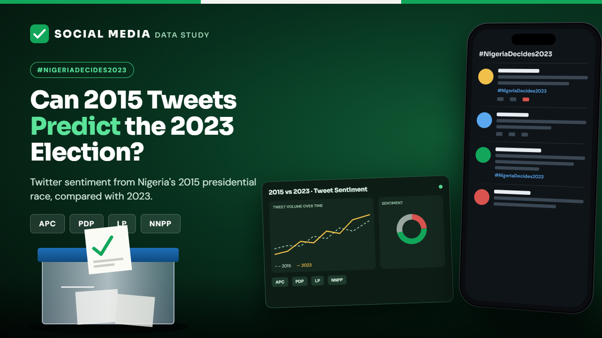
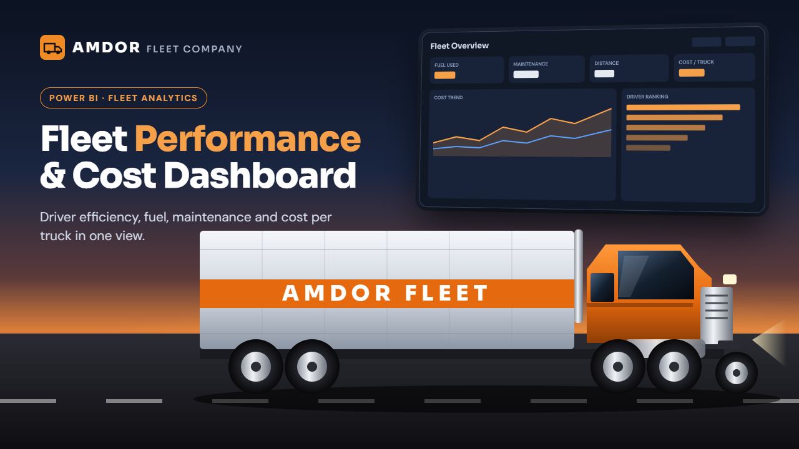
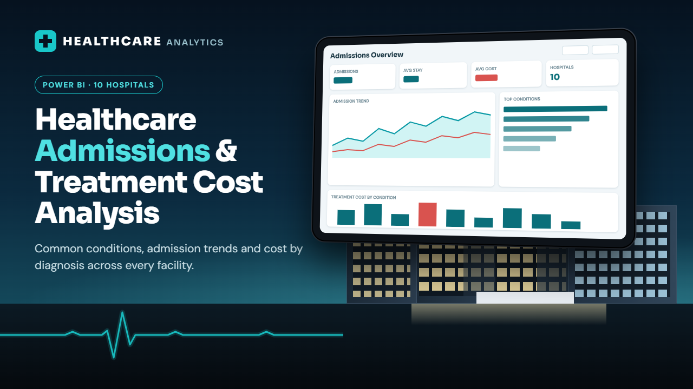
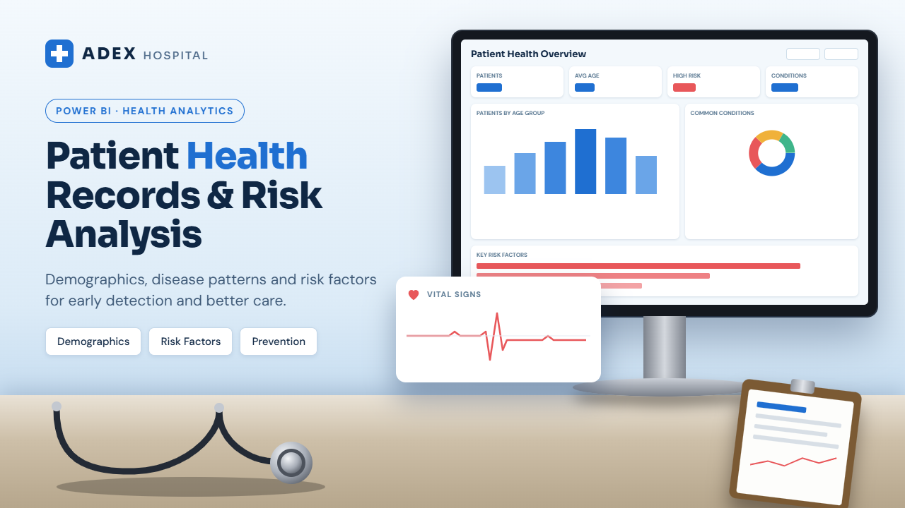
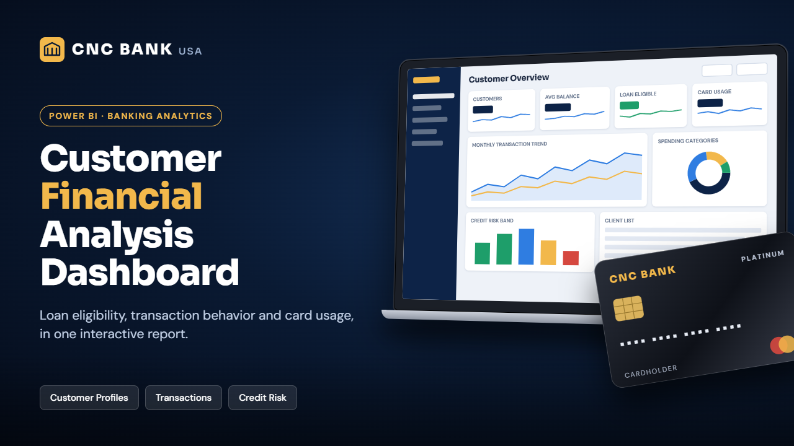
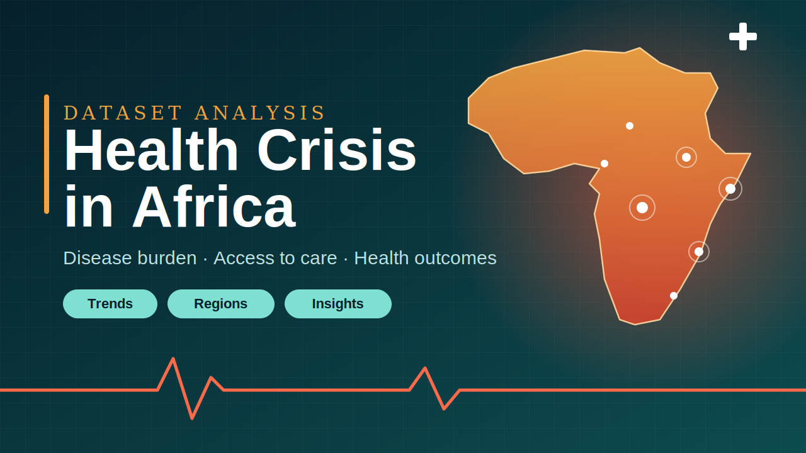

Analytics & BI
Interactive dashboards, KPI systems, reporting automation and diagnostic analysis designed around the questions decision-makers actually need answered.
Data Analyst · Data & Business Consultant · Analytics Educator
I help organisations understand complex data, build decision-ready analytics and make stronger business choices. I also mentor professionals who want clearer career direction and stronger market positioning.

I work across data analytics, consulting, education and professional development. My core strength is turning raw information into clear evidence: dashboards, patterns, recommendations and practical decisions.
As Founder of Amdor Analytics, I have built data-learning experiences and communities while training thousands of professionals. I am also deepening my practice in predictive analytics, Data Science and AI, building on a strong analytics foundation.
02 / What I bring
Interactive dashboards, KPI systems, reporting automation and diagnostic analysis designed around the questions decision-makers actually need answered.
Problem framing, analytical direction and practical recommendations that connect the numbers to operations, performance and business priorities.
Hands-on data training and career guidance built around practical capability, employability, confidence and stronger professional positioning.
03 / Selected work
Each project is presented as a concise case study. The visual on this page is the project thumbnail; the full dashboard or study opens only when you choose to explore it.

Comparative data studyView project ↗A collaborative study comparing online political support with offline election outcomes. It examined 2014 and 2022 Twitter activity, hashtags, party support and regional voting context to explore how digital sentiment related to Nigeria's 2015 and 2023 presidential races.
View full study ↗
Live Power BIView dashboard ↗A fleet-operations analysis combining distance travelled, fuel consumed, fixed costs, maintenance and driver-level performance. The dashboard turns vehicle activity into management-ready indicators for efficiency and cost control.
Explore live dashboard ↗
Live Power BIView dashboard ↗An interactive analysis of patient admissions and treatment costs across ten hospitals. It was built to identify high-volume medical conditions, periods of peak admissions and the cost implications of care to support resource allocation and patient-management decisions.
Explore live dashboard ↗
Live Power BIView dashboard ↗A patient-health analysis structured around demographics, disease patterns and risk factors. The dashboard helps users explore patient profiles and potential health-risk signals in a format designed for clearer monitoring and prevention-focused conversations.
Explore live dashboard ↗
Live Power BIView dashboard ↗A multi-page banking analysis covering customer profiles, financial characteristics, transactions, credit risk and card behaviour. It brings customer and financial indicators together to surface patterns that can inform segmentation, risk and client-management decisions.
Explore live dashboard ↗
Dataset analysisView project ↗A cross-country public-health analysis covering 54 African countries and bringing population, mortality, GDP and medical-resource indicators together. The work explores geographic disparities and the relationship between population scale, health resources and outcomes.
View full project ↗04 / Services
Focused support for organisations that need better data decisions and professionals who need stronger direction or positioning.
Mentorship
One-to-one guidance for professionals who need career clarity, stronger positioning, practical direction and a more intentional next step.
Consultation
Problem framing, analytics direction, dashboard and reporting conversations, and practical data support for decision-makers and growing businesses.
Standalone services
05 / Amdor Analytics
Through Amdor Analytics, I design and deliver data analytics learning experiences, mentor emerging professionals and contribute to a growing community of people developing practical, market-relevant data skills.
Visit Amdor Analytics ↗06 / Experience
Amdor Analytics · Remote, Nigeria
Designing analytics curricula, training and mentoring learners, and growing an accessible data-learning ecosystem.
10Alytics · Canada (Remote)
Delivered practical data training to more than 1,000 learners and contributed to programmes supporting career transitions into analytics.
Binotech Integrated Services Ltd · Nigeria
Built dashboards and KPI systems, analysed customer and sales data, and automated reporting for business decision-making.
07 / Professional profile
My work combines analytics, consulting, education and leadership. Download the CV for a fuller view of my experience, tools and professional background.
08 / Contact
Tell me what you need and I’ll use the context to understand whether the right next step is analytics support, business consultation, mentorship or one of the standalone career services.
chinyerec@amdoranalytics.io ↗